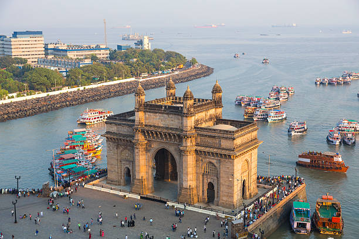
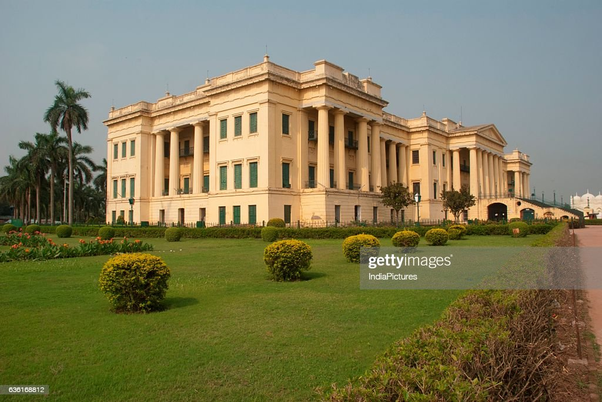
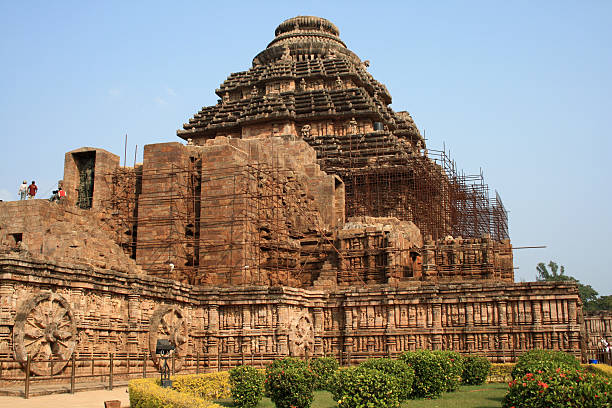

The Taj Mahal is a historic monument built with a backdrop of immense love and countless interesting facts that have made it grab a place in the list of 7 Wonders of the World. And it would not be an exaggeration if we tell you that Agra sees the maximum number of tourists arriving from all over the world to witness the beauty of The Taj Mahal. If you actually want to see an example of the immaculate Mughal Era art and architecture, visiting The Taj Mahal built by Shahjahan should be next on your list.
For some The Taj Mahal architecture is all about the grandeur and royalty of the one who built The Taj Mahal and for some, this masterpiece stands as an epitome of love. However, the underlying beauty and history of The Taj Mahal India are way more than what appears superficially. Hence, we are here with every piece of information related to when was The Taj Mahal built, who made The Taj Mahal, why was The Taj Mahal built, and of course countless other questions. All you have to do is scroll down and give this article a read to be the one with maximum information in your group when the chats are about the ethereal, The Taj Mahal.
The entire idea behind constructing a monument like the Taj Mahal was about Shahjahan’s wife Mumtaz Mahal. It was in the year 1631 that she died while birthing their 14th child and it was in her memory that Shahjahan decided to give the world a monument that will forever be etched in people’s minds as a symbol of love. And to answer in which year The Taj Mahal was built, it was in 1631 that the construction of this monument commenced. Cravers, inlayers, dome-builders, calligraphers, stonecutters, masons, and artisans from all across Shahjahan’s empire and from some parts of Central Asia and Iran were called to construct the giant white beauty. And it took approximately 22 years to complete the construction of The Taj Mahal. As per historical records over 1,000 elephants and 22,000 laborers played a role in building The Taj Mahal. The monument is completely made of white marble which was imported from Central Asia and also collected from various parts of India. And it was almost after an expense of 32 billion rupees that the construction of the Taj Mahal was done in the year 1653.
As soon as the construction of The Taj Mahal was complete, Shahjahan the mind behind The Taj Mahal was deposed by his son Aurangzeb and was put in Agra Fort under house arrest. Along with Mumtaz Mahal, Shahjahan is also entombed in the same mausoleum and was laid to rest beside his wife’s tomb. Moving further in history, almost during the end of the 19th century, Lord Curzon who was a British viceroy gave the orders for a restoration project to bring back the life of monuments that were damaged during the Indian rebellion of 1857, and the project was finished in 1908. The government officials and British soldiers blemished the beauty of The Taj Mahal and also took the lapis lazuli and other precious stones embellished in the monument. But with prevailing controversies and multiple scars on its beauty from the past, the glorious The Taj Mahal still stands tall and beautiful adding to the grandeur of India.
On the banks of River Yamuna is the massive structure of The Taj Mahal situated which is said to have been built by over 22,000 workmen. The marble and other construction materials along with the artisans came from all across Shahjahan’s reigning empire and other parts of the world. A good and ideal example of Persian, Indian, and Islamic architecture is what The Taj Mahal is all about. Along with the grand structure of The Taj Mahal, the tomb, mosque, gateway, and garden also make up the complete journey of The Taj Mahal.
An area as large as 42 acres is what was required to build The Taj Mahal. The platform on which The Taj Mahal stands tall is 50 meters in height and the four minarets stand tall at a height of 137 feet along with the tomb at 58 meters height. In the east of The Taj Mahal, there is a guest house also known as the Naqqar Khana and on the west is a mosque. Both the mosque and the guest house are made up of beautiful red sandstone and a garden adorns The Taj Mahal complex which covers 580 meters*300 meters of the area. Islamic style of construction is followed throughout the architecture of the garden, and it is always green and well-watered.
In the year 1648, the construction of the main gate was completed which has a height of 30 meters and the upper portion of the gateway comprises Chhatris and you will notice the verses of the Holy Quran inscribed on the gateway. Silver was used for the construction of the gateway and there are letters carved on it. After stepping inside the gateway, you will come across a courtyard. For your information, during the course of the Mughal Era, every year on Mumtaz Mahal’s death anniversary, a huge amount of charity was done ever after Shahjahan’s reign as a king ended.
A mosque which is situated on the west of The Taj Mahal faces the Holy city of Mecca and as per renowned historians, Isa Muhammed is the one who is said to have constructed the mosque. You can easily notice two arches on the sides of the mosque and the exterior of the mosque has a portal known as Iwan. Along with it, the four kiosks and three domes are made up of marble. Talking about the interiors, the floors of the mosque are engraved with 569 prayer rugs which are made out of black marble and the walls adorn the name of Allah and verses from the Holy Quran. Another aspect of the mosque is the Mehrab which points to the direction of Mecca and it also has a Minbar from where the Maulanas deliver the Namaz. A stone of height19 feet by 6.5 feet is also present in the mosque which represents the tomb of Mumtaz Mahal, and the mosque also has a pool where the ablution is done before offering the prayers. The two towers present in the mosque are on the north and the south.
The garden present in the complex of The Taj Mahal has spiritual symbolism attached to it as the greenery represents the mention of paradise in the Holy Quran. As soon as you step inside the main gateway, you can see the garden which is stretched at an area of 580 meters by 300 meters and it stands divided by 16 flower beds and two watercourses.
Once you cross the garden, you can reach the tomb which is stretched in an area of 95 square meters and the entrance of the tomb begins with a double staircase. Four minarets, each of 137 feet height surround the tomb and they are built in a way that if natural calamity or mishap occurs, they will not fall on the tomb. There are four letters engraved on the 4 minarets which when spelled together form Ar-Rahman which is amongst the many names of Allah. Below the tomb is the central chamber comprising of four rooms for the graves of other family members and it was Aurangzeb who modified the authentic screen to an octagonal screen that was embellished with precious stones and made of marble.
The center of attraction of The Taj Mahal is the tomb and the dome of the tomb has 110 yards of circumference and 107 yards of height. The structure of the tomb symbolizes the union of earth and heaven and is constructed in Islamic style and the square structure on which the tomb is placed is symbolic of the universe.
In a straight line, the distance between Agra and Delhi is 194 kilometers and based on miles it is 120.5 miles. Usually, the time to cover this distance varies because of the curvatures of the road taken to reach the Taj Mahal. By road, the driving distance is 243 kilometers and 97 meters and it takes around 4 hours to reach the Taj Mahal if you are choosing to go by road.
Here is the breakup of the revenue generated and the number of tourists visited in recent years:
For the year 2014-2015, the total number of visitors to the Taj Mahal was estimated to be 60,89,901 and the overall revenue collected for the same year was ₹21,23,55,330.
For the year 2015-2016, the total number of visitors to the Taj Mahal was estimated to be 50,70,573 and the overall revenue collected for the same year was ₹17,92,27,05.
For the year 2016-2017, the total number of visitors to the Taj Mahal was estimated to be 61,77,196 and the overall revenue collected for the same year was ₹55,09,29,860.
For the year 2017-2018, the total number of visitors to the Taj Mahal was estimated to be 65,65,627 and the overall revenue collected for the same year was ₹58,76,04,981.
For the year 2018-2019, the total number of visitors to the Taj Mahal was estimated to be 70,90,207 and the overall revenue collected for the same year was ₹86,48,93,100.
The data presented above shows that there has been a rise in the number of tourists and also in the revenue generated. Over five years, the number of tourists has increased by 10 lakhs, but the revenue has almost increased four times. In the year 2014-2015, the total cost of maintaining the Taj Mahal was ₹3,90,20,190 but by the year 2018-2019, the cost came to be ₹5,48,34,582. The maintenance of The Taj Mahal is done according to the principles of the Archaeological department and proper and periodic care is taken to preserve the beauty of the monument.
One can never hold the beauty of this beautiful monument in their eyes, hence any number of visits to The Taj Mahal is not enough. Head out on a trip to the wonderful and magnificent Taj Mahal to get an experience of a lifetime.
Hundreds of tourists flood India Gate to behold the spectacular sight of it every day but it holds a special significance for us as Indians. It is not just a tourist site in Delhi and holds a very special patriotic significance. India Gate is located in Rajpath, New Delhi, and is a famous hangout spot for the locals as well.
This stunning structure which can be recognized from miles away is a brainchild of Sir Edwin Lutyens, the famous English architect. The construction of the India Gate was done by the Imperial War Graves Commission or IWCG. This organisation was established in 1917 for the sole purpose of building graves and war memorials of the soldiers who died in the First World War. The foundation of India Gate was laid in February 1921 by the third son of Queen Victoria, the Duke of Connaught. After a period of ten years, the monument was inaugurated by Viceroy Lord Irwin who dedicated it to the nation and the upcoming generations of the country. Also known as the Delhi Memorial, it has the names of 13,000 soldiers who died during the war, inscribed on it.
In 1971, Bangladesh was formed and the Indo-Pak war led to the martyrdom of many Indian soldiers. In 1972, a new structure was added to the India Gate which is known as Amar Jawan Jyoti (in English, it means the Flame of the Immortal Soldier). This structure was inaugurated by the then Prime Minister of India, Indira Gandhi, and was established to pay tribute to those soldiers.
As mentioned above, India Gate New Delhi was designed by Sir Edwin Lutyens who was a member of the IWCG. He was a very famous war memorial architect of that time. This structure was built without any religious prejudice and free of any cultural ornamentation. He avoided adding pointed arches to the structure because he did not want to include Asian motifs. So, India Gate’s architectural style is that of a triumphal arch which is similar to that of the Gateway of India in Mumbai and Arc de Triomphe in Paris.
42 meters tall & 9.1 meters wide, the India Gate Delhi is placed right in the center of a hexagonal complex. The entire structure is made of red and yellow sandstone which was imported from Bharatpur.
A canopy was constructed in the year 1936 which was made about 150 meters towards the east side of the India Gate. This structure was built as a tribute to King George V, the former Emperor of India. It replaced the already built marble statue of King George V at that place.
India Gate New Delhi also has a structure called Amar Jawan Jyoti which has a marble pedestal with a cenotaph on top of it. The words ‘Amar Jawan’ are written on all four sides of the cenotaph in golden letters. It also has an installation of a reversed rifle which is capped by a soldier helmet. The Amar Jawan Jyoti has flames burning around it on all four sides permanently, which is fuelled by CNG.
It is believed that a building of such sort and significance cannot be built overnight. Just like the Taj Mahal, India Gate holds a specific significance of giving a tribute to the martyrs. It took around 10 years to complete the construction of this memorial.
On the memorial, the word INDIA is inscribed on both sides. The dates MCMXIX (1919) and MCMXIV (1914) are also inscribed on the left and right sides of the word INDIA on the memorial.
India Gate made by the Imperial War Graves Commission and designed by Sir Edwin Lutyens is known for its stunning architecture.
You might find a lot of tourists there just to gather a view of the India Gate but it has a patriotic significance as well.
13,218 names of servicemen which were soldiers and officers from the United Kingdom are inscribed on the memorial.
The flame that surrounds the structure of Amar Jawan Jyoti burns 24×7 and is fuelled by CNG.
Out of the 13,218 names inscribed on the India Gate, one is of a female nurse who died during the war.
It is a popular belief that the empty canopy which is placed behind the India Gate is a symbol of the British retreat in India.
Sir Edwin Lutyens, the architect who designed the India Gate has also designed some other important monuments like Viceroy House, commonly known as the Rashtrapati Bhavan.
It is said that you should visit India Gate at night and there is a reason for it. The stunning memorial is lit up with spotlights in the night which makes it more attractive.
Lush green lawns surround the India Gate, which is a favorite spot for the locals and tourists alike to enjoy sunlight, picnics, play cricket or fly kites.
A children’s park is located nearby the India Gate which is a great spot for the children to play in.
Many locals both young and old, come to the Rajpath for morning walks.
You can enjoy delicious traditional food in Andhra Bhavan which is in the proximity of 1 km of the India Gate. It is one of the most iconic restaurants in Delhi.
If you want to experience the local street food of Delhi, then you should definitely try the Pandara Road Market. This market is also located within a walking distance of the India Gate.
India Gate to Red Fort distance is only 15 minutes so you can also visit the grand Red Fort on your visit to India Gate.
National War Memorial at 750 m
Children’s Park at 900 m
National Gallery of Modern Art at 1.4 km
Purana Qila at 2.2 km
National Science Centre at 2.5 km
Agrasen ki Baoli at 2.5 km
Jantar Mantar at 2.9 km
Rashtrapati Bhavan at 2.7 km
Lodhi Garden at 2.9 km
Connaught Place at 4 km
Raj Ghat at 5.2 km
Chandni Chowk at 5.6 km
Jama Masjid at 5.8 km
Even though it remains a very popular tourist attraction in the country, it is a symbol of nationalism and will always remain so. Every year, on 26th January, the Republic Day of India, the special Republic Day parade starts from the Rashtrapati Bhavan gates which is the residence of the President, and continue past the India Gate. The Prime Minister of India places wreaths on the Amar Jawan Jyoti on this particular day.
Whether you are traveling to the national capital, Delhi alone, or with family and friends, paying a visit to the India Gate must be on your list. India Gate, made by the Imperial War Graves Commission, is a historical landmark. India Gate is located in Rajpath, New Delhi, and its history, significance, and symbolism are known all over the world.
Hazarduari Palace, earlier known as the Bara Kothi,[1] is located in the campus of Kila Nizamat in Murshidabad, in the Indian state of West Bengal. It is situated near the bank of river Ganges. It was built in the nineteenth century by architect Duncan Macleod, under the reign of Nawab Nazim Humayun Jah of Bengal, Bihar and Orissa (1824–1838).
In 1985, the Archeological Survey of India (ASI) disclosed several facts about Hazarduari Palace, including its old name called Bara Kothi. This also amazed the people stating that it's impossible to figure out the actual worth of the historical architect in today's scenario.
West Bengal of India is a state that is enriched with a solid historical background still holding one of the rich cultural importance with its celebrations, art, literature, and cuisine. Similarly, the state has Hazarduari Palace, a well-known architecture that signifies the beauty, art, and culture of Murshidabad and its bygone days.
The most popular thing about Hazarduari Palace is its thousand doors in which actual doors only count to 900, but the other 100 doors are unreal. The basic idea behind the structure was the security of the people living inside the palace so that no invaders could attack them from outside the campus border.
This was constructed to misguide the invaders who would struggle to find the actual door to get inside the palace and help the Nawab's army escape and plan a foolproof strategy.
From 1824 to 1838, the Nawab Nazim Humayun Jah was the ruler of Bengal, owning the Hazarduari Palace. Since then, the palace has been one of India's historical artefacts and assets that has enormously benefited the nation to promote its fine art, revealing the ruler's lifestyle and brave stories to the tourists.
Inside the palace, a museum has a great collection of antiques, old furniture, treasured paintings, tools, instruments, and more. You will find the Muhammad- i-Beg's dagger with which he killed Siraj-ud-Dualah. Along with this, a palanquin was used by Mughal emperor Aurangzeb's daughter Zebunissa.
There are historical books from where you can learn about the palace. Here you could also see the precious hookah carved with marble along with the silver throne of Nawab Feradun Jah.
Including this, some artworks of French, Italian, and Dutch artists can also be seen. Undoubtedly, Murshidabad Hazarduari is worth visiting to reveal the old mysteries and engage with mesmerising artefacts.
West Bengal is the hub of Indian history that connects to the political importance of Murshidabad Hazarduari Palace. This old fort was used for the empire's royal and official gatherings.
Heading to this, Hazar Duari was also used by the Britishers, who even granted accommodation facilities to their higher authority officials to stay inside the campus.
Inside the palace, the old artwork and vintage furniture speak a lot about the taste of Nawab. One who visits the palace could feel the ancient days closely.
Interestingly, Hazarduari Palace has a mystery mirror where the person who stands in front of it cannot see themselves, but others can. The mirror was planned to be placed at 90 degrees.
The reason behind this was to mislead the invaders who could harm the Nawab before they could realise that they were the target. This magic mirror is placed outside the gallery, and visitors try the experiment to know the story's relevance.
This wooden Imambara went through an accident and caught fire completely. Due to this, the first Imambara built did not exist after 1848.
However, it was rebuilt after two years. And the Nizamat Imambara is still listed under the title of India's biggest Imambara.
Bacchawali is a canon that may look ordinary to you but holds a strong and distinctive reason for its structure. As the name suggests, it is connected to a pregnant woman or a woman who has just given birth to a baby.
The weight of this cannon is 7657kg, where 18 kilograms of gunpowder is needed for a single shot. And you will be amazed to know that this cannon has been used just once to date.
This is because the loud volume it generated could make any pregnant woman deliver the child within 10 miles radius.
The Crystal Chandelier is a sign of royalty that nobody can deny. And when it comes to exploring a place like Hazar Duari, then you must not miss the chance of being under the world's second-largest chandelier after the one in Buckingham Palace.
This astonishing chandelier had thousand and one lit candles back when there was no electricity. Ninety-six electric bulbs have now replaced these candles after urbanisation. Queen Victoria gifted it to the Nawab, which still adds antiquity to the palace's beauty.
Madina Mosque was built by Nawab Siraj-ud-Dualah, situated close to the Nizamat Imambara. Fortunately, the mosque escaped the fire caught by the Imambara due to its proximity.
It is said that the soil used for its construction was mixed with the soil brought from Mecca. The primary reason behind this was to let the inferior local Muslim community embrace the feeling of Hajj.
First, you need to travel by train from Kolkata Murshidabad Station.
From there, you can get a battery cab that will charge you Rs.10 per head.
You may find some cost-effective hotels to help you stay near Hazarduari Palace.
But you need to decide beforehand at the nearest hotel from Murshidabad Hazar Duari.
The total distance from Murshidabad railway station and Hazarduari is approximately 3km.
Entry Timing: 10:00 am to 6:00pm
Indian Visitors: Rs. 30 each
Tourists: Rs 250 each
Note: You may book online tickets through travel sites as well.
Surya is the Hindu sun god, and the Konark Sun Temple is dedicated to him. The temple was established in the 13th century and is situated 35 km northeast of Puri city on the Puri district coastline of Orissa, India. King Narasimhadeva accredited the Konark mandir I of the Eastern Ganga dynasty around 1250 CE. In this old-world heritage shrine you will find all the elements of a Hindu temple as well as extensive iconography inside out.
Before moving into the past of the Konark temple’s history, let’s first overview a bit about this temple. Experiencing the grandeur and enormity of Orissa, people like to visit this historical Konark temple built by Narasimhadeva I. It is a must-visit if you travel to Orissa as it is a UNESCO World Heritage Site.
The name Konark is derived from combining two Sanskrit words, Kona (corner or angle) and Arka (the Sun). The Konark of Odisha forms a bilateral triangle with the Puri Jagannath temple and the Lingaraj temple of Bhubaneswar. Amongst all three temples, the Konark Odisha temple forms the Kona (corner) of the triangle. The Konark stands as a classic example of the old age Hindu temple architecture and represents the colossal structure, artwork on myriad themes, and sculptures that draw a lot of tourists from all over the world.
The history of Konark Sun Temple takes you back to the 19th century BC. The angle of the temple defines its name, from where the sun rises. This sun temple is located in the historical place of Kalinga, which includes significant areas of Orissa and different parts of Chattisgarh, West Bengal, and Andhra Pradesh, which was ruled by the Eastern Dynasty kingdom from the 5th to 15th century AD. It is amongst the most intense dynasties of India, initiating the existence of majestic temples like Puri Jagannath Temple and Konark Temple.
The Konark temple was constructed by King Narasimhadeva I in 1244 to worship Surya, the sun god of the Hindus. The place Konark was selected to build the sun temple, as the site is considered a holy seat based on various ancient texts.
The Konark Sun Temple is located on the Chandrabhaga river. The world heritage site is also known as the Black Pagoda because it was made of black granite stones. It is an enormous erotic sculpture which is demonstrating several couples making love in different postures. Also, the time wheels engraved in stones are depict the hours of the day as the sun changes positions.
Many beautiful images inscribed on the walls, roof, and time wheel of the temple attract tourists to this ancient worship site. It is a unique temple that boldly depicts the man-woman relationship as a part of life. The romantic couples and women are beautifully carved on the stones of the 12 richly adorned pairs of wheels. This evergreen beauty is located at the temple's base, which never fails to attract the visitor’s attention.
Besides the art on the stone, what’s unique about these big ornate wheels is that they tell us the time of the day. The wheel's radius creates the sundial with the spokes, and each wheel has eight thinner spokes and eight wider spokes. Out of all 24 wheels, six are on either side of the main Konark temple, two wheels are on the eastern front, and four wheels are on either side of the Mukhasala.
You can calculate the exact time of the day by looking at the shadows cast by the spokes of the Konark wheels. As per the Konark sun temple information, it is believed that the Konark wheels also represent the zodiac signs. Some researchers claimed that the wheels at Konark Surya temple are the same as the Dharmachakra of Buddhists, the Wheel of Karma or the Wheel of the Law.
The Konark Sun Temple architecture displays the peculiar style of Kalinga and Orissa, which is a reflection of the Nagara style of Hindu temple architecture. Nagara is one of the three styles of Hindu temple architecture.
The Konark temple beautifully characterises Nagara-style architecture with a square ground plan and a sanctuary and assembly hall (mandapa). A big curvilinear tower is known as a shikhara at the peak, inclining inwards and capped.
The Konark sun temple is entirely built of stone with 12 pairs of lavishly-ornamented wheels in the form of a colossal chariot. Seven richly-caparisoned, galloping horses draw the stones.
The Konark Sun Temple architecture depicts the Hindu beliefs that have invariably become part of the antique artistic creation associated with the sun god in India, along with 12 wheels that represent the 12 months of the year.
Today, this historical worshipping site isn’t just renowned among tourists but serves as a cultural festival and classical dance performance venue. The cultural relevance of the Konark Sun Temple is depicted on the reverse side of the Indian currency note of 10 rupees to portray its importance to Indian cultural heritage. Amongst 32 world heritage sites in India, Konark Sun Temple was declared a cultural heritage site by UNESCO in 1984.
Ganga dynasty king Narasimha Deva built the Konark temple to worship the Hindu god Sun. The temple was constructed and designed in a unique Nagara Hindu temple architectural style with different stones. The Konark temple's history details its importance from construction and decay to its restoration and present cultural relevance among the tourists. The Konark Sun Temple is an immense cultural heritage of India which still defines its name and is built. Hence, you must not skip visiting this heritage site when planning your visit to Orissa, and it is better to learn about its history in advance to relate it when you pay a visit to Konark Sun Temple.
If you think Victoria Memorial Kolkata is only a historical monument and a landmark for the city then, that’s not entirely the case. The majestic monument stands tall as a mark of the architectural and colonial history of Kolkata. Not only the legacy but also the white marble architecture draws in tons of tourists to Kolkata Victoria thereby making it a tourist attraction. Surrounded by sprawling gardens, Victoria Palace Kolkata has a lot more of it that needs to be known. And we are here with a dedicated article that talks about the magnificent monument. To know more, keep scrolling!
The Victoria Memorial, the most famous building in Kolkata is the result of Lord Curzon’s brain who was once the Viceroy of India under British rule. It was in the year 1901 when the then Empress of British India died, Lord Curzon decided to honour her with the construction of a grand memorial monument. The proposal was to build the memorial as a stately edifice and for the visitors to have a look at the past marvels. In 1906, the foundation stone of Victoria Memorial was kept by the Prince of Wales who afterwards became King George V on January 4th. Victoria Memorial was officially inaugurated in 1921 and thereafter opened for public visits. Later, after India became independent, there were multiple additions done to Victoria Mahal.
If you think a specific type of architecture suffices the structure, then let us tell you that it’s the amalgamation of multiple styles of architecture. The prominent one is the Indo-Saracenic style displaying the elements of both British and Mughal architecture. Also, the monument hints at some Egyptian, Deccani, Venetian, and Islamic architectural elements. The palace is made out of Makrana marble that gives a royal vibe altogether.
Talking about the design, Victoria Memorial is inspired by the majestic Taj Mahal. The design elements incorporated in the architecture are one central dome, four other domes, a terrace, chhatris shaped like octagonal domes, and high portals. On top of the central dome, there is a statue of the Angel of Victory which is 16 feet high. A lot of allegorical sculptures can also be noticed, for instance, the north porch showcases learning, motherhood, and prudence.
Roughly, the lush gardens of Victoria House Kolkata, take up 26,000 square meters or 64 acres of area and some highly experienced gardeners are on duty to maintain these beauties. It was Lord Redesdale along with David Prain who designed the gardens of such a monumental structure. The bridge which was designed by Esch has the statue of Empress Victoria seated on her throne which was created by Goscombe John and also a statue of bronze which was made by George Frampton. In the Victoria Memorial Hall, you will also find statues dedicated to James Broun-Ramsay, Robert Clive,1st Marquess Cornwallis, Arthur Wellesley, Charles Cornwallis, Hastings, and 1st Marquess Dalhousie.
When you move to the south of the Victoria Memorial, you will locate an arch in the memory of Edward VII which has Edward VII’s equestrian statue which was formed by Bertram Mackennal. Also, a marble statue of Lord Curzon made out of marble by FW Pomeroy is present.
Similar to the Taj Mahal, Victoria Memorial is also made out of the Makrana marbles brought from Rajasthan. Along with the dome, some other architectural elements also resemble that of the Taj. You can surely call it one of the best examples of amalgamating Mughal and British architecture. This style of architecture was used by the Britishers during the 19th century and was known as the Indo-Saracenic Revival style of architecture.
You will find many allegorical scriptures inside the central dome which represent charity, motherhood, prudence, and wisdom. There is also a Victoria Memorial museum inside the monument which has paintings from the colonial era and also memorabilia of Victoria. In addition to this, the Victoria Memorial museum also has some hard-to-find post stamps and manuscripts dating back to the Mughal era.
As many as 25 galleries are present in the memorial to please the eyes of the visitors. Some of the galleries are the Central Hall, gallery of portraits, Calcutta gallery, gallery of arms and arsenal, and the gallery of sculptures. And in the National Leaders Gallery, you can also find the portraits of Indian freedom fighters being displayed.
For constructing this enthralling memorial, donations were accepted from all across India and hence a large portion of the construction was funded by the Indians. The British Government did fund the construction but partly.
There is a statue of the Angel of Victory which is 16 feet in height and placed on top of the great dome which rotates with the flow of wind.
When you enter the memorial, you can notice two writings, one which is on the columns of the entry gate that says, ‘VRI’ which is Victoria Regina Imperatrix that means ‘Victoria Queen Empress. The other one can be spotted on the entry gate of Victoria Memorial hall that says, ‘Dieu Et Mon Droit’ which translates to ‘God is always right.’
Presently, this monument is one of the most famous buildings in Kolkata with several galleries and almost 28,000 artefacts which includes armours and arms, antique books, paintings, and sculptures.
For visitors, the gallery remains open from Tuesday to Sunday between 10 am to 5 pm. Indians have to pay entry fees of ₹20 and foreign nationals have to pay ₹200. Children in school uniform up to class 12th and army personnel do not have to pay any entry fees.
For visitors the gardens are open on all seven days between 5:30 am to 6:15 pm. The entry fee is ₹10 for senior citizens aged above 60, the yearly ticket is ₹1,000. For others, the fee is ₹2,000.
Since Victoria Memorial is at a central location, you can reach there easily by an ola or uber. And keeping the peak hours away, it usually takes one hour to reach Victoria Memorial.
The evenings at Victoria Memorial are nothing less than bliss because of the sound and light show. This show takes the spectators on a journey of Kolkata’s history and heritage. The title of the show is Pride and Glory- The Story of Calcutta and it surely brings alive the fascinating stories that the city has held from the past. Note that the shows do not happen on Mondays, between July and September, and on national holidays.
Show Duration: 45 minutes
Bengali Show Timings- From October to February in between 6:15 pm to 7 pm and from March to June 6:45 pm to 7:30 pm.
English Show Timings- From October to February between 7:15 pm to 8 pm and from March to June 7:45 pm to 8:30 pm.
Entry fees for Bengali Show- ₹20
Entry fees for English Show- ₹30